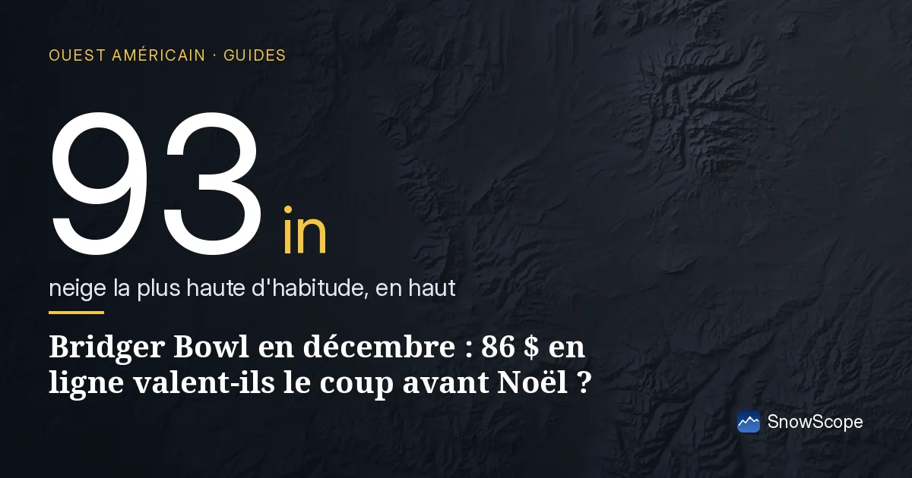

Bridger Bowl en décembre : 86 $ en ligne valent-ils le coup avant Noël ?
Bridger Bowl, l'association à but non lucratif près de Bozeman, affiche un forfait journée complet à 86 $ en ligne — pas de supplément week-end, pas de piège. Le problème, c'est le timing. Mi-montagne atteint 50 cm le 15 décembre dans seulement la moitié des hivers passés, mais la semaine de Noël apporte de bonnes conditions de neige dans 78 % des années.
Consultez les prévisions neige en temps réel pour Bridger Bowl sur l'application SnowScopeHauteurs de neige, alertes poudreuse et carte 3D, gratuitement.
La station et le forfait
Bridger se situe dans la chaîne Bridger au nord de Bozeman avec 12 remontées et environ 42 km de pistes entre 1 865 m et 2 457 m. Les pentes supérieures sont raides ; les pistes basses sont longues et faciles.
Un forfait journée complet coûte 86 $ en ligne ou 99 $ au guichet pour les adultes de 19 à 69 ans. Le forfait après-midi à partir de 12 h 30 coûte 74 $. Si vous prévoyez trois visites, le pass Any Day coûte 230 $ pour trois jours non consécutifs sans jour d'exclusion.

Début décembre : mince et inégal
La neige arrive régulièrement à mi-octobre à mi-montagne (2 161 m), mais décembre s'accumule lentement. Un 1er décembre typique, mi-montagne a 37 cm. Le 15 décembre, cela monte à 51 cm — le seuil du bon ski — mais seulement la moitié des hivers passés a atteint cette profondeur à cette date.
La base, à 1 865 m, est plus mince : un 15 décembre typique affiche 31 cm, et seulement 24 % des hivers atteignent 50 cm là-bas. Le sommet (2 457 m) s'en sort mieux avec 73 cm le 15 décembre dans 78 % des hivers. La neige de début de saison est dispersée, et les rochers ou le sol peuvent apparaître aux altitudes basses.

La semaine de Noël : le tournant
Le jour de Noël, mi-montagne monte à un typique 57 cm, et 72 % des hivers dépassent 50 cm. Le sommet atteint 79 cm dans 85 % des hivers. Le 31 décembre, les probabilités s'améliorent à nouveau : mi-montagne fait en moyenne 69 cm dans 76 % des hivers, et le sommet 88 cm dans 87 %.
La semaine du 21-27 décembre, 78 % des hivers passés ont apporté de bonnes conditions de neige à mi-montagne. C'est le pivot entre le risqué et le fiable. Si vous pouvez attendre fin décembre, le terrain raide de Bridger et sa tarification transparente récompensent la patience.
Comment cet hiver se compare
Les hivers passés montrent un déclin graduel des chutes de neige en décembre. Les 15 premiers hivers de nos données (1980-81 à 1994-95) faisaient en moyenne 73 cm à mi-montagne le 15 décembre, avec 67 % au-dessus de 50 cm. Les 15 derniers hivers (2011-12 à 2025-26) faisaient en moyenne 50 cm, avec 47 %. L'hiver dernier avait 45 cm à cette date, en dessous de la moyenne récente.
Cette tendance reflète des changements plus larges dans la région, non propres à Bridger. La montagne voit toujours une accumulation fiable à partir de janvier, quand la profondeur médiane maximale à mi-montagne est 141 cm.
Bridger face aux voisins
Montana Snowbowl, à l'ouest de Missoula, facture 78 $ en semaine et 85 $ en week-end. Mi-montagne (1 909 m) fait en moyenne 76 cm le 15 décembre dans 83 % des hivers — un meilleur pari de début de saison. Snow King à Jackson facture 100 $ et fait en moyenne 71 cm avec 87 % de probabilités.
Pour une excursion d'un jour début décembre depuis Bozeman, Snowbowl devance Bridger en épaisseur de neige. Pour la semaine de Noël et au-delà, le tarif en ligne de 86 $ de Bridger et son terrain expert l'emportent. La différence entre 78 $ et 86 $ compte moins quand les probabilités de neige passent de 50 % à 78 %.
Quoi apporter et vérifier
Bridger Canyon Road peut geler après les matins poudreux : apportez des pneus neige et attendez-vous à une circulation lente. Prévoyez un départ tôt ou acceptez les retards. La montagne supérieure est un terrain raide et sérieux qui nécessite de l'équipement avalanche, un compagnon et un bulletin d'avalanche actuel — consultez le Centre d'Avalanches de la Forêt Nationale Gallatin avant de vous aventurer hors-piste.
Conseils aux skieurs
- Achetez votre forfait en ligne à 86 $, jamais au guichet (99 $). Sur une journée de conduite, ces économies paient une bière.
- Évitez le pari : passez les 1-15 décembre sauf si vous recherchez le sommet à 2 457 m, où 78 % des hivers ont de bonnes conditions. Prévoyez plutôt la semaine de Noël et au-delà.
- Utilisez le pass Any Day (230 $ pour trois jours) pour répartir les visites entre fin décembre et janvier, quand la neige est plus profonde et plus fiable.
- Bridger Canyon Road gèle facilement. Partez tôt, apportez des pneus neige et armez-vous de patience pour le retour.
- Le terrain supérieur nécessite une formation et de l'équipement avalanche. Consultez le bulletin d'avalanche officiel avant de quitter la zone des remontées.
À propos de ces chiffres
Les hauteurs de neige des stations sont la neige la plus épaisse sur le haut du domaine à la date indiquée ; ce sont des estimations pour une zone, pas une mesure en un point. Les prévisions peuvent changer. Consultez toujours le bulletin d'avalanche officiel avant le hors-piste.
Bulletins d'avalanche officiels: Gallatin National Forest Avalanche Center
Citer ce bulletin
Pour la recherche, l'enseignement ou la presse : chiffres et graphiques réutilisables librement sous CC BY 4.0 avec cette citation.
SnowScope (2026), Bridger Bowl en décembre : 86 $ en ligne valent-ils le coup avant Noël ?, https://snowscope.app/blog/fr/2026/11/bridger-bowl-bozeman-december-ski-cost.html, consulté le 2026-11-15
SnowScope (Atlas Labs). (2026, November 15). Bridger Bowl en décembre : 86 $ en ligne valent-ils le coup avant Noël ?. SnowScope snow reports. https://snowscope.app/blog/fr/2026/11/bridger-bowl-bozeman-december-ski-cost.html
BibTeX
@misc{snowscope2026bridgerbowlbozemandecemb,
author = {{SnowScope (Atlas Labs)}},
title = {Bridger Bowl en décembre : 86 $ en ligne valent-ils le coup avant Noël ?},
year = {2026},
month = nov,
howpublished = {\url{https://snowscope.app/blog/fr/2026/11/bridger-bowl-bozeman-december-ski-cost.html}},
note = {Published 2026-11-15 09:34 UTC; accessed 2026-11-15}
}· CC BY 4.0 · Méthodes, données et outils →
Bridger Bowl : neige et température selon l'altitude, cet hiver vs l'hiver dernier (outils) →
Suivre Bridger Bowl
Gratuit : un message quand la neige arrive, et la météo chaque matin.